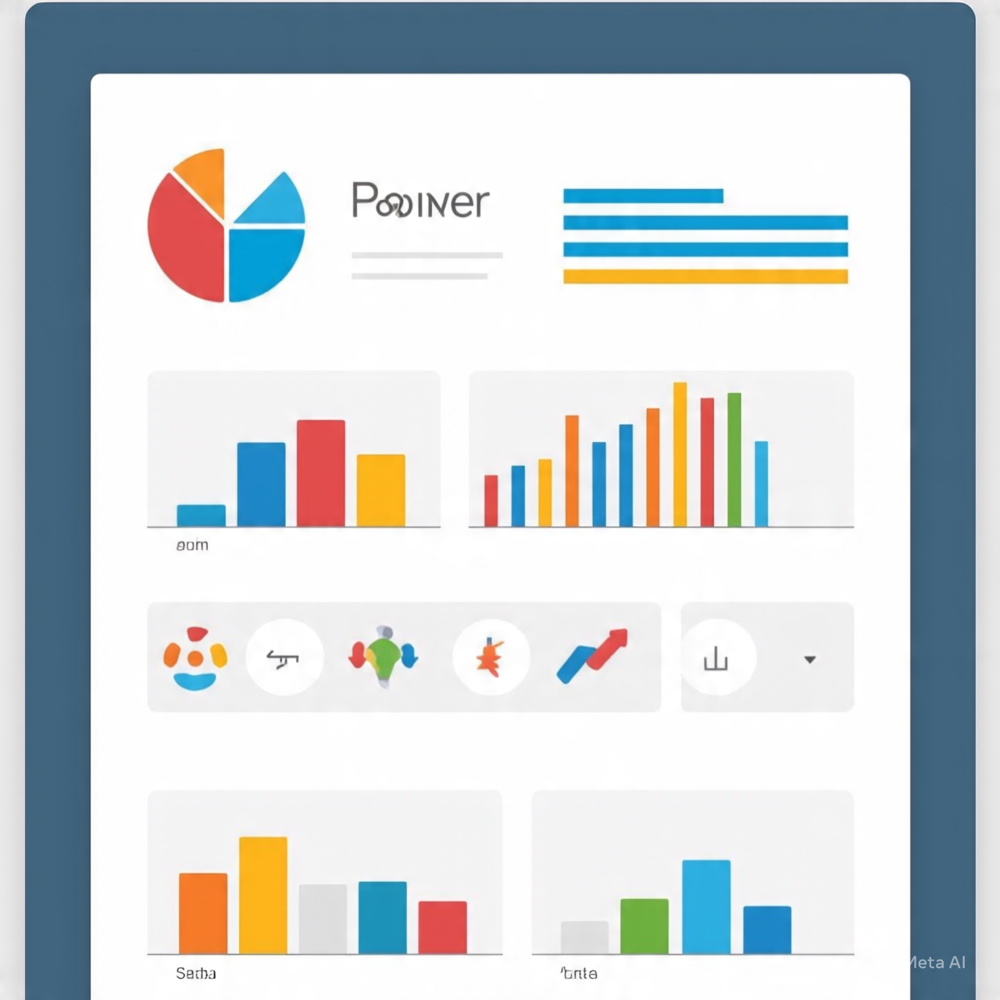

In this project, I analyzed a global survey of data professionals to uncover trends in job titles, career transitions, salaries, tools, work satisfaction, and demographics. Using Power BI, I transformed raw Excel data into interactive visualizations that reveal insights into the current state of the data industry.

This project focuses on building a predictive machine learning model to estimate used car prices based on key vehicle attributes such as brand, year, fuel type, engine size, mileage, and more. The goal was to assist dealerships or buyers in understanding fair market prices using historical data.

This project analyzed a dataset of 500 customer records over 6 months to identify risk factors linked to delinquent accounts. The study found that income, credit utilization, age, and payment history were strong predictors of delinquency.
Key Insights/p>

This project analyzes chip category purchasing behavior and evaluates trial store performance against matched control stores. Using segmentation by lifestage and affluence, statistical testing, and data visualization, it identifies high-value customer groups and validates trial success. Recommendations guide strategic rollout, customer targeting, and category growth opportunities for future planning.
In this project, I used SQL to clean, format, and explore a raw dataset to prepare it for analysis. The dataset contained inconsistencies, null values, duplicates, and formatting issues that needed to be addressed to ensure data quality and reliability. After cleaning, I performed exploratory queries to uncover trends, patterns, and summary statistics.
This project focused on building an automated pipeline to fetch real-time cryptocurrency data using a public API. The goal was to collect, store, and analyze price movements and market metrics for major cryptocurrencies such as Bitcoin, Ethereum, and others.
In this project, I analyzed a dataset of individuals to understand how various lifestyle and demographic factors influence consumer behavior — specifically the likelihood of purchasing a bicycle. Using Excel's data tools, I performed detailed cleaning, filtering, pivot analysis, and visualizations.